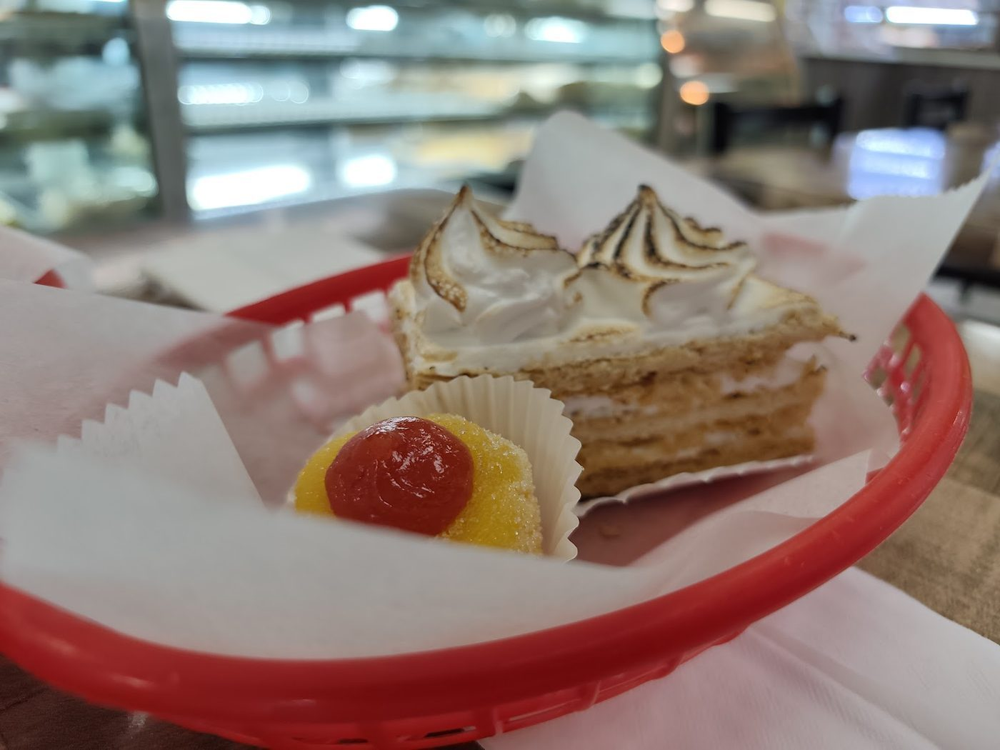
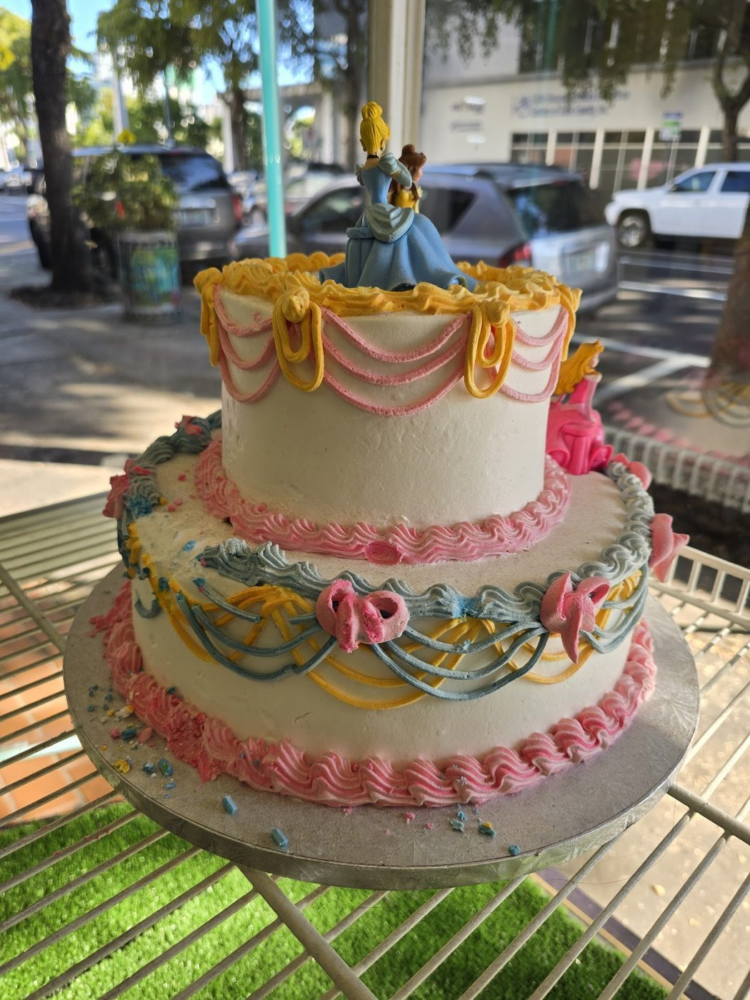
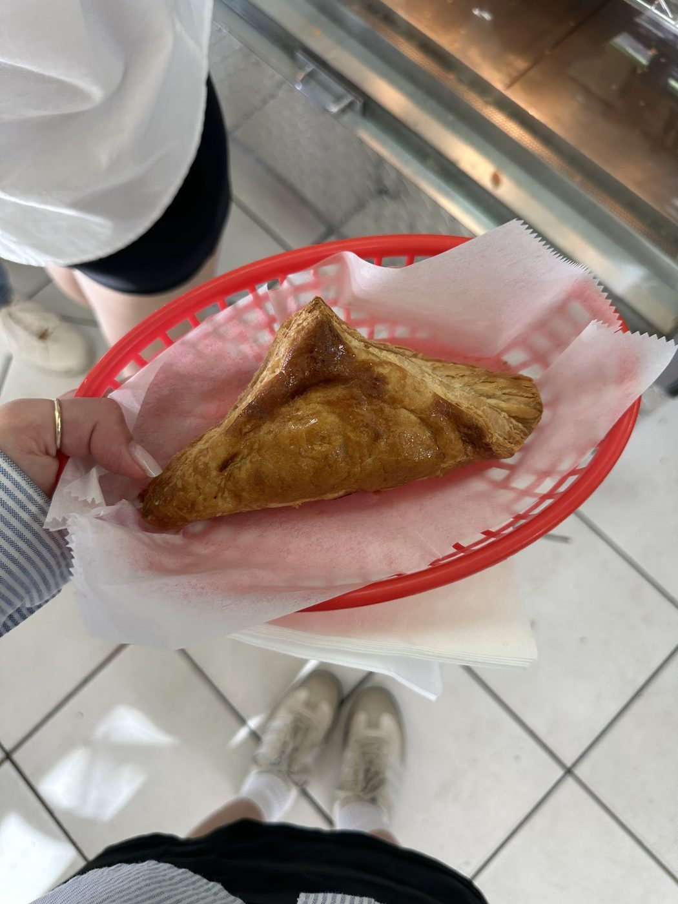

Eastern European baking in Charleston
Euro Foods Bakery and Cafe is an Eastern European bakery cafe with an attached market in Charleston. Khachapuri, pierogi, cabbage rolls, kielbasa, and Ukrainian borscht are all on the menu.
Euro Foods Bakery and Cafe sits at 1664 Old Towne Rd in Charleston. It bakes Eastern European breads and dishes, and its attached market stocks specialty breads and deli meats.


1664 Old Towne Rd, Charleston, SC
Hours differ by source, see the Visit page for both listings